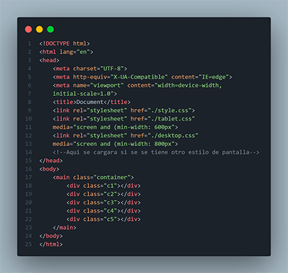
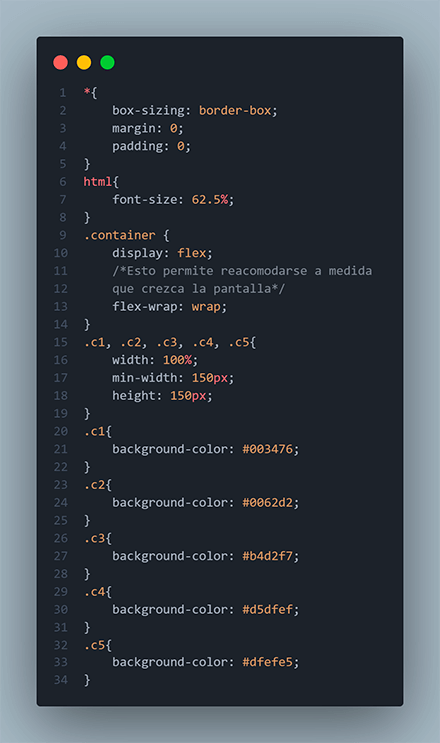
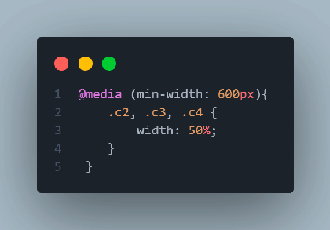
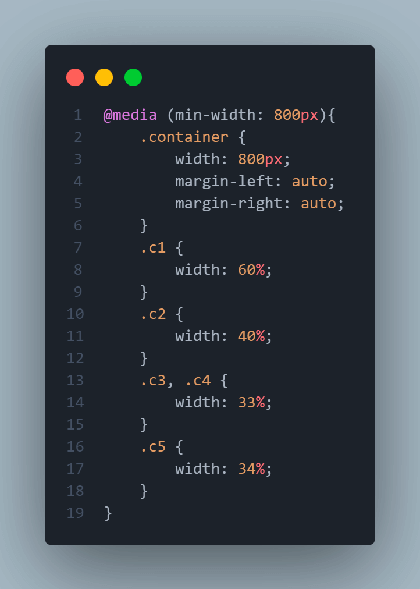

Mosty Fluid
El patrón Mostly fluid consiste, inicia con columnas verticales que se van ajustando en la medida que se va aumentando el tamaño de pantalla. Dependiendo el tamaño de pantalla, se puede amplia el ancho de las columnas o se agregan nuevas.

HTML
Mobile
Tablet
Desktop
Layout shifter CSS
El patrón Layout shifter es el más adaptable, ya que posee varios puntos de interrupción en diferentes anchos de pantalla.
La clave para este diseño es el desplazamiento del contenido, en lugar de su reprocesamiento y colocación debajo de otras columnas. Debido a las diferencias significativas entre cada punto de interrupción principal, es más complejo de mantener, y es posible que se deban realizar cambios dentro de los elementos, no solo en el diseño de contenido general.
Column drop
En el caso de los diseños con varias columnas de ancho completo, durante el proceso de colocación de columnas éstas únicamente se colocan de forma vertical debido a que el ancho de la ventana es demasiado reducido para el contenido.